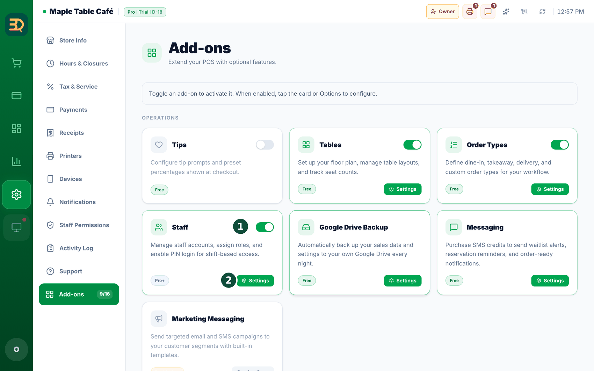
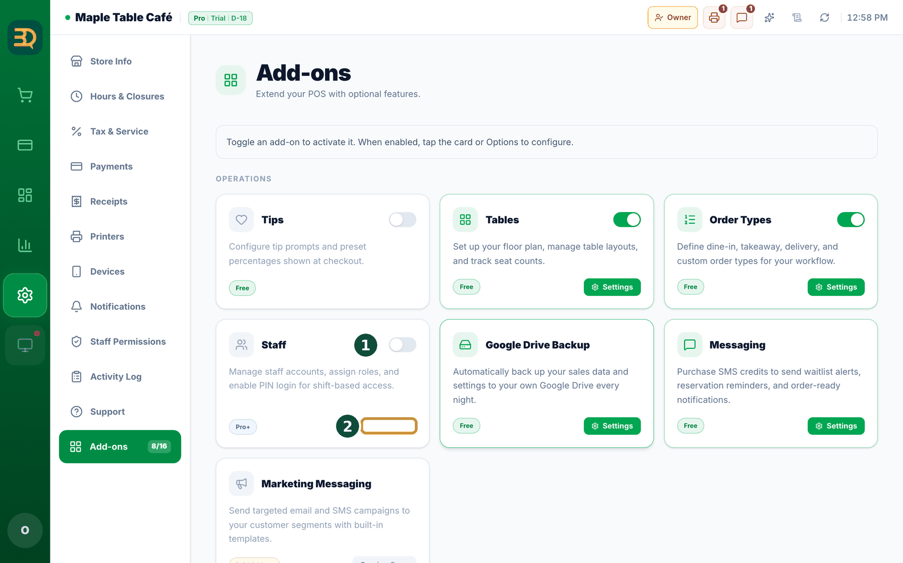
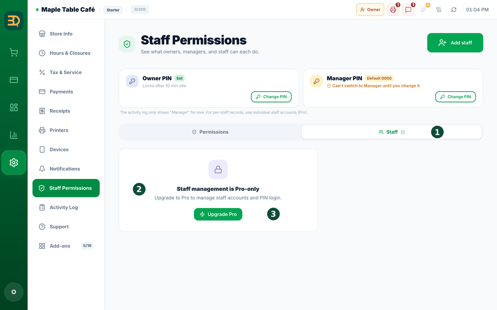
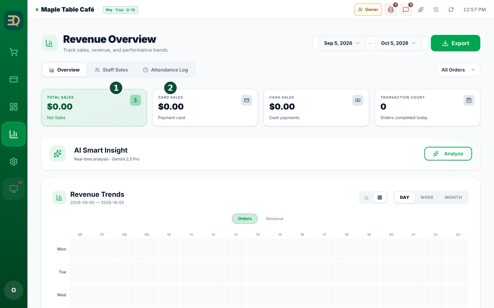
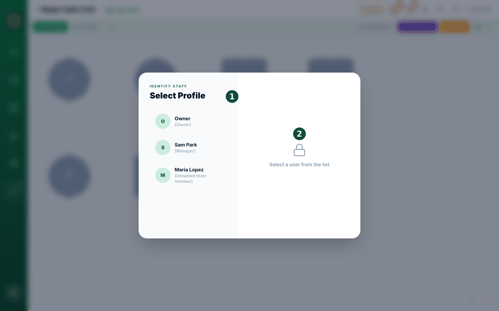
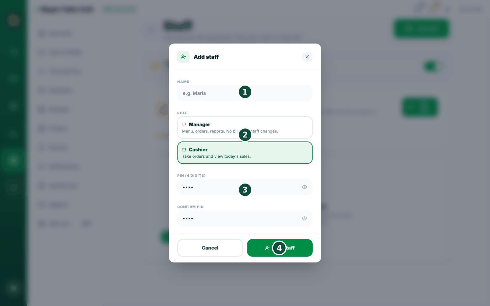
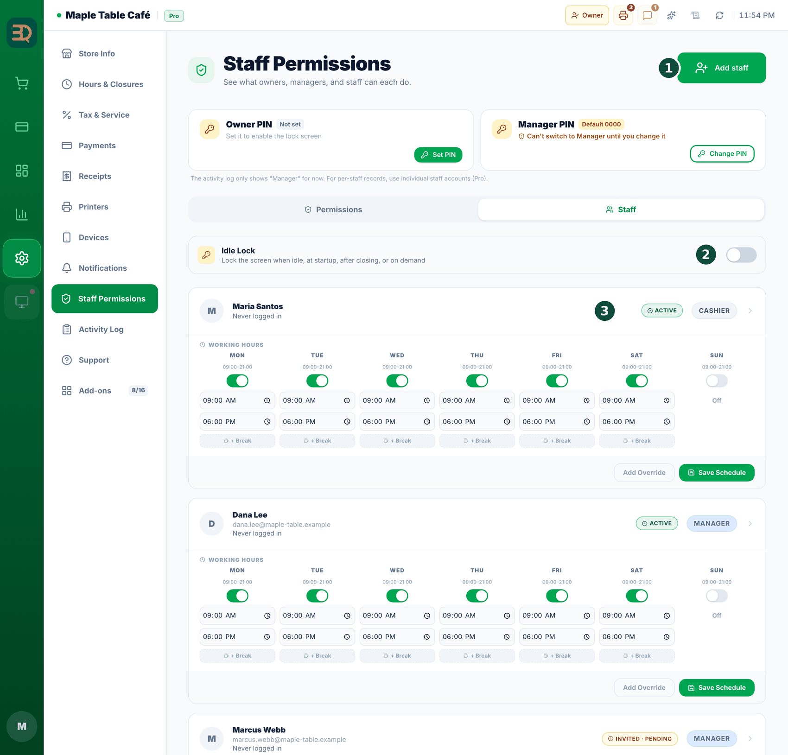
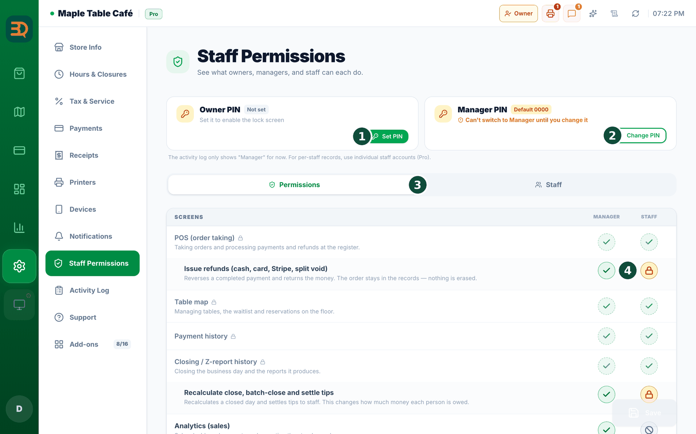
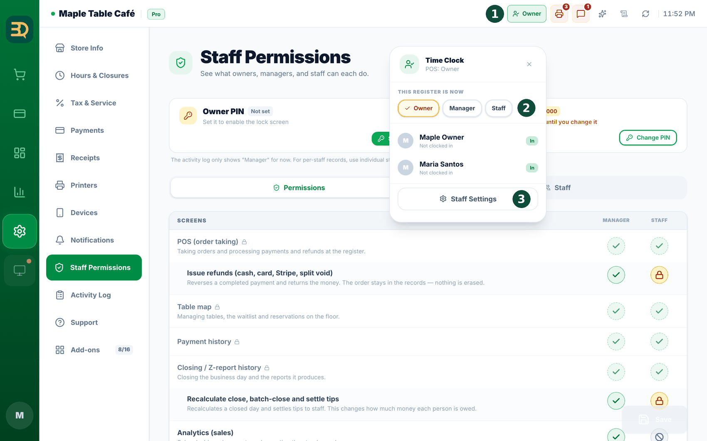
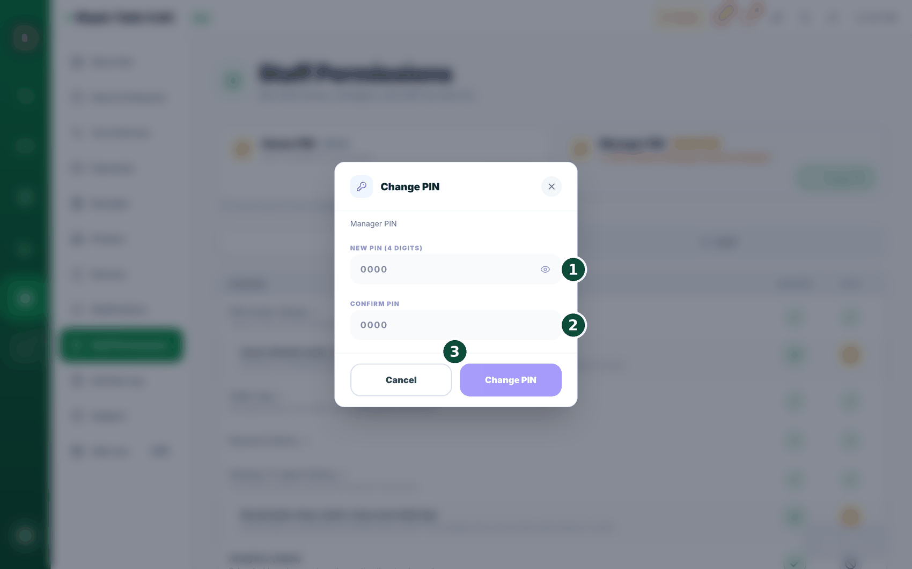

15员工与权限
您可以在这里添加和您一起工作的人，指定每个人能做什么，并记录他们的工作时间。（需要 Pro 或 Business 套餐。）
在 Settings › Add-ons › Staff 中开启（Pro 附加功能；只有店主可以开启）。

- 进入 Settings（设置），找到员工页面。
- 点 Add staff（添加员工），输入对方的姓名。
- 给他们指定一个角色。角色决定对方在应用里能做什么、不能做什么。
- 如果希望收银机在没人使用时自动锁定，请开启 Idle Lock（离开锁屏）。（它以前叫“PIN Login”。）
- 开启考勤打卡（Time Clock）后，员工点一下就能记录上下班。他们的工时会自动计入您的报表。
- 您可以随时把员工的名字加到订单上——即使销售已经完成。（对美容美发店很方便。）
员工附加功能：开启与关闭的区别
员工功能只有在两个条件都满足时才会完全开启：（1）您的套餐是 Pro 或 Business；（2）Settings › Add-ons 中的 Staff 开关是开启的。缺少任何一个，部分功能就会像下面这样被锁定。






- 开启：统计（Stats）中的 Staff Sales（员工销售）和 Attendance Log（考勤记录）标签可以使用（统计页面默认从 Revenue Overview（营收概览）开始）。付款记录里会多出 All Staff（所有员工）筛选，Close Day（日结）窗口会显示员工标签。如果同时开启了 Idle Lock（离开锁屏），收银机会显示 Select Profile（选择账号）锁屏，每个人切换到自己的账号。
- 关闭：上述标签会显示锁形图标，All Staff 筛选、日结员工标签和锁屏都不会出现。在
Settings › Staff Permissions › Staff中添加和查看员工，只要是 Pro 套餐，无论开关状态如何都可以进行。 - Starter 套餐：Add-ons 卡片上显示 Upgrade（升级）按钮，而不是开关。Staff 子标签只显示一个锁、"Staff management is Pro-only"（即“员工管理仅限 Pro”）和一个 Upgrade Pro（升级到 Pro）按钮。
添加员工



- 点 Add staff（添加员工），会打开一个表单。
- 输入对方的姓名（Name）。
- 选择角色（Role）——Manager（经理：菜单、订单、报表，无计费或员工变更权限）或 Cashier（收银员：接单和查看当日销售额）。
- 设置 4 位数 PIN 并确认。
- 点 Add staff（添加员工）。他们现在会出现在员工列表中，并且可以用自己的 PIN 登录。
修改或删除员工
改名字、换 PIN、隐藏已经离职的人——以前这是同一行里四个不同的小控件。现在只有一个入口：点这个人卡片上的 Info 按钮。

- 员工列表为每个人显示一张卡片（两列），包含姓名、角色标记、状态（如“活跃”）、邮箱，以及已设置 PIN或未设置 PIN。点卡片上的 Info 按钮即可打开该员工的窗口。窗口顶部有三个标签——Info、Sales 和 Attendance——姓名、角色和 PIN 在 Info 标签中修改。（尚未接受邀请的人只有 Info 标签。）
- 顶部会显示对方的邮箱，让您确认没有找错人。需要的话，修改姓名（Name）。
- 如果对方的工作变了，修改角色（Role）。（店主所在的行只以文字显示角色——店主的角色在这里不能更改。）
- 要设置新的 PIN，请在两个 PIN（4位数字）格中都输入。两格都留空，则当前 PIN 保持不变——格子下方会一直显示这句话（“留空则保持当前 PIN 不变。”）。
- 点 Save（保存），完成。
移除某个人，和把门店转手是两回事。如果您要出售门店，请联系我们办理所有权转让。
Sales 与 Attendance 标签
在员工窗口的 Sales 标签中，可以看到对方的小费——合计、待结算小费和按日期列出的小费。在 Attendance 标签中，可以按日期看到排班、上班、下班和工时。时间范围可选今天、本周、本月或自定义（最多 92 天）。如需在统计中按相同的人员和时间范围查看更详细的数据，请点在统计中查看详情（只有能打开统计的角色才会显示）。
选择取消人
这个开关决定取消（Void）窗口是否显示“取消人”选择栏。它是 Settings › Staff Permissions › Staff 标签中的选择取消人，默认关闭。开关一点就会立即保存。
- 只有在 Staff 附加功能开启时才会显示这个开关（Pro 或更高套餐）。
- 开启后，当有两人或以上（店主也算）时，取消原因窗口会出现取消人列表。默认选中当前用 PIN 登录的人，您也可以选其他人。
- 选择其他人时不会再次询问对方的 PIN。取消记录会同时保留您选择的人和该设备上登录的人。
权限、经理 PIN 与角色标签
这个设置页面决定经理和收银员各自被允许做什么。您可以勾选并保存。页面布局已重新设计——先选择一个角色，该角色能做的事就会按分组显示出来。
Settings › Staff Permissions。经理可以打开并查看；只有店主可以更改并保存。顶部有两个标签——Permissions（权限，所有套餐都有）和 Staff（员工，Pro 功能："Staff management is Pro-only"，即“员工管理仅限 Pro”）。


- 先选择角色。左侧的角色列表（窄屏幕上是顶部的 Role 选择框）中有 Owner（店主，固定）、Manager（经理）和 Staff（员工），每个角色都显示人数以及“默认”或“固定”标记。店主始终可以执行所有操作，所以这个角色不能更改（“店主始终可以执行所有操作。”）。
- 中间的列表把权限分成六个分组——订单与支付 · 退款与折扣 · 菜单 · 报表 · 设置 · 员工。分组名称旁的勾选框可以一次性开启或关闭整个分组（只开启了一部分时显示为半选），右侧的数字（例如 3/5）是已开启的项目数。点分组名称，右侧会展开其中的具体项目。
- 勾选或取消勾选某个项目。对于已开启且分档的项目，右侧的选择框可以选允许、需要审批（经理需要先输入 PIN）或受限（只能看到一部分）。取消勾选即为不允许。
- 带锁的项目即使是店主也不能更改（店主专属或固定项目）。
- 在顶部的搜索权限…框中输入文字，列表就只显示匹配的项目。
- 底部一行会显示“更改将应用于此角色的全部 N 人。”设置完成后，点 Save（保存）。Discard（放弃）会还原尚未保存的更改。如果没保存就切换到另一个角色，BrewDesk 会询问“先保存更改吗？”。保存和放弃按钮位于此权限页面的底部。
Hours & Closures。此前已为经理开启保存设置的门店，会把相同的值沿用到这项权限，这些经理仍可继续保存。没有此权限的经理尝试保存营业时间时，会弹出上面的“您没有执行此操作的权限”提示。Settings › Staff Permissions › Staff）只会让收银机不再自动锁定——仅此而已。员工仍用自己的 PIN 登录，角色标签仍会切换，活动日志仍会记录谁做了什么，本页的每一项权限仍然生效。（关闭 Staff 附加功能才是让系统不再区分人员的开关。）三种 PIN——门店店主 PIN、门店经理 PIN、我的个人 PIN
PIN 卡片不再并排放在本页顶部，而是在角色窗口里——点角色列表中某个角色旁的铅笔按钮（或顶部 Role 选择框旁的铅笔按钮）即可打开。PIN 按用途分为三种。
- 门店店主 PIN——进入店主界面时使用。所有登记为店主的人都可以修改。在 Owner 角色窗口中。
- 门店经理 PIN——把这台收银机切换到经理界面时使用。只有店主可以修改。在 Manager 角色窗口中。有了它，当班的人不需要单独的账户就能处理经理的事务。
- 我的个人 PIN——用于 PIN 登录和上下班打卡的个人 PIN，与门店 PIN 无关。店主本人的在 Owner 角色窗口中设置；员工的个人 PIN 则在该员工编辑窗口的 PIN 格中设置（请参阅修改或删除员工）。
每张卡片都会显示已设置或尚未设置。PIN 为 4 位数字，不能使用 1234 这类简单数字。在角色列表中，没有 PIN 的 Manager 行会带有未设置 PIN标记。经理打开角色窗口时会看到一个锁形图标和“只有店主可以更改此卡片。”
角色标签——切换这台收银机现在是谁在用

- 看顶部栏：有一个彩色标签，显示这台 POS 当前以什么身份运行——Owner（店主，橙色）、Manager（经理，蓝色）或 Staff（员工，灰色）。
- 点它，会打开一个小面板，列出这三个角色。
- 降级（例如从店主切到员工，把收银机交给别人）只需点一下。不需要 PIN——因为您是在放弃权力，而不是获取权力。
- 升级需要输入对应角色的 PIN（“请输入经理 PIN”）。这台设备无法进入的行，在您点之前就已经变灰，所以不会走进死胡同。
忘记 PIN？
没有人需要因为忘了 PIN 而打电话给客服。每种 PIN 都有各自的找回方式。
店主 PIN——在店主 App 或通过邮件链接重新设置
点顶部栏的角色标签（就是切换角色时用的那个面板），选择店主这一行，就会出现 PIN 键盘，键盘下方有 "Forgot your PIN?"（忘记 PIN？）。店主、经理、员工的屏幕上都能点，但新 PIN 不能在收银台上直接设置。
- 点 "Forgot your PIN?"，会给出两种办法。一是 BrewDesk 店主 App 的 Settings › Owner PIN（设置 › 店主 PIN），无需旧 PIN；二是向店主邮箱发送重置链接。
- 发送链接后，链接会发到注册时的账户邮箱，收件地址固定为该邮箱。收银台上只留下一行提示：设好新 PIN 后请在上方输入。
- 打开邮件中的链接，在设置新的店主 PIN 页面输入两次 4 位数字，点保存 PIN。然后在收银台用新 PIN 切换到店主模式即可。
经理 PIN——店主直接设置新的

- 打开
Settings › Staff Permissions，点角色列表中 Manager 行的铅笔按钮，找到门店经理 PIN 卡片。 - 点 Change PIN（更改 PIN；如果还没有，则是 Set PIN（设置 PIN））并输入新的代码。仅限店主。
- 把新的代码告诉柜台。
Settings › Staff Permissions › Staff 中打开那个人，"Reset to 0000"（重置为 0000）仍然可用——店主或经理都可以使用。重置之后，请让他们马上设置自己的 PIN。